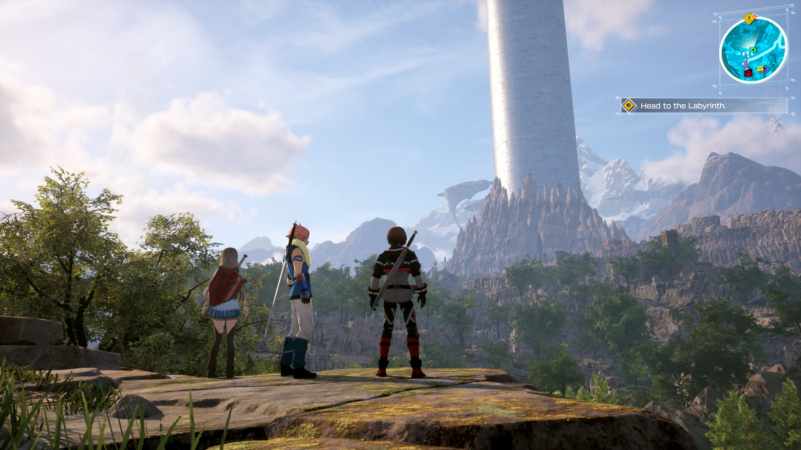
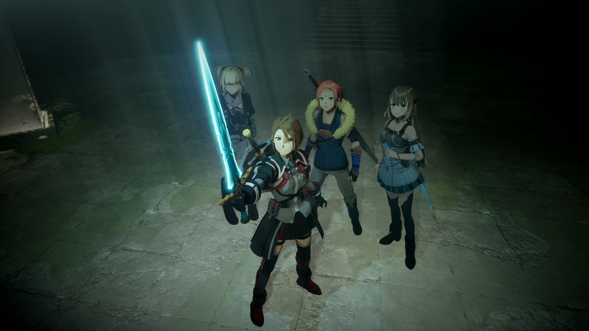
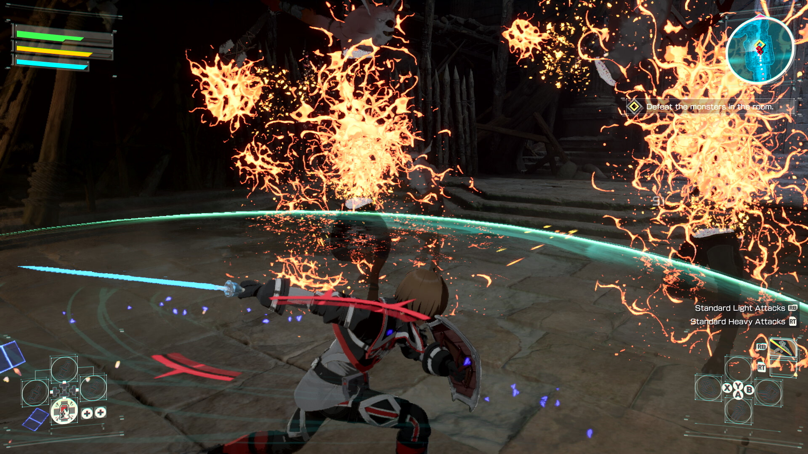
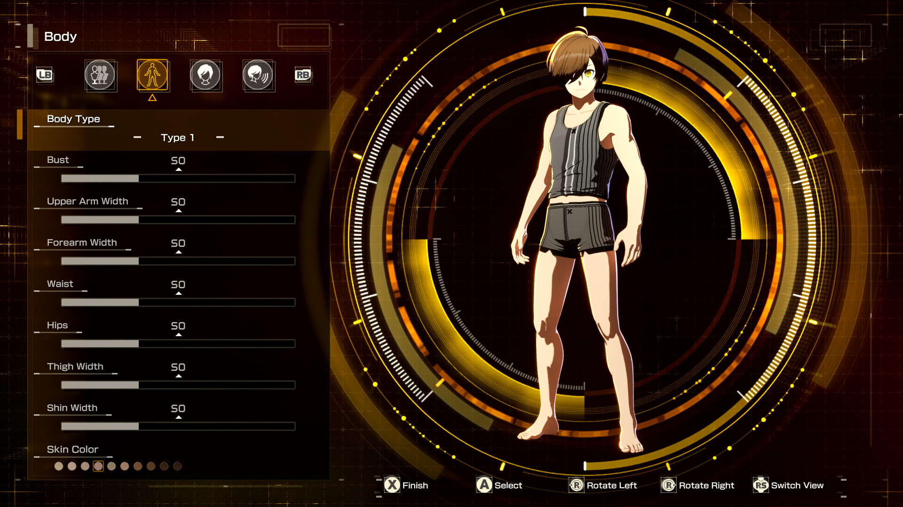
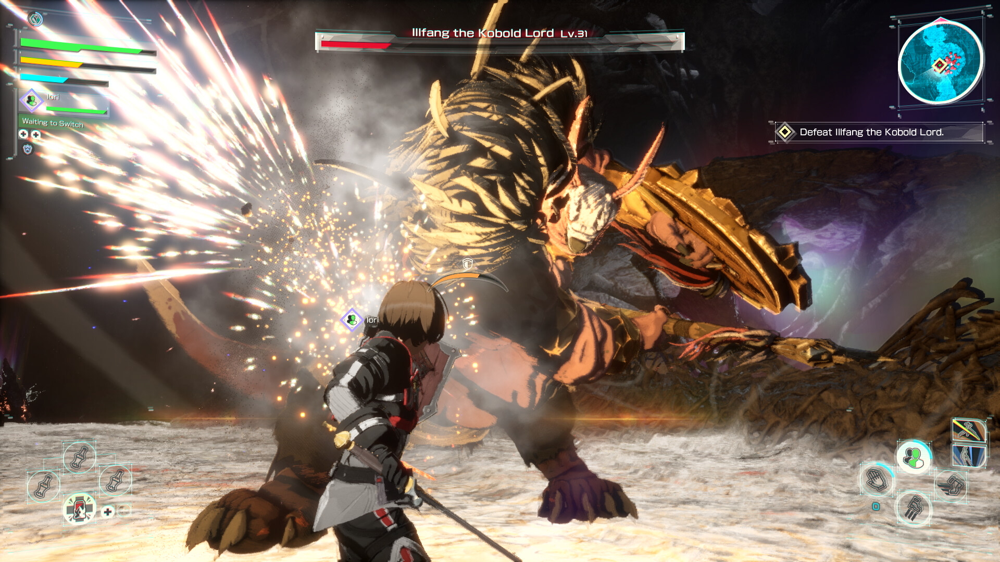

에코스 오브 아인크라드 출시일 발매 스팀 초보 시작 가이드
소드 아트 온라인 원점을 다시 그린 신작, 에코스 오브 아인크라드가 2026년 7월 9일 PS5·엑스박스 시리즈 X/S로 먼저 발매되고 스팀은 하루 뒤인 7월 10일 출시하는데요. 아인크라드 1층부터 다시 시작하는 데스게임을 오리지널 아바타로 직접 체험하는 액션 RPG라 저처럼 소아온 좋아하던 사람들은 벌써 달력에 표시해둔 분들 많으실 것 같아요. 오늘은 출시 전에 미리 알아두면 좋을 기본 정보랑 초보자 시작 가이드를 정리해볼까 합니다.

떠 있는 성 아인크라드, 이 이미지만 봐도 소아온 원작 느낌이 물씬 나죠.
이미지: 스팀 공식 스토어
에코스 오브 아인크라드, 어떤 게임이에요?
반다이남코가 퍼블리싱하고 게임 스튜디오(Game Studio Inc.)가 개발한 싱글 플레이 액션 JRPG인데요. 원작 애니메이션의 배경인 '아인크라드 편'을 완전히 새로 리부트한 작품이라고 보시면 됩니다. 원작처럼 가상현실 MMORPG에 접속한 1만 명이 로그아웃 불가에 게임 속 죽음이 현실 죽음으로 이어지는 데스게임에 갇히는 설정을 그대로 가져왔는데요, 다만 주인공이 키리토가 아니라 플레이어 자신이 직접 만든 오리지널 아바타라는 게 핵심 차이더라고요.
스토리는 플레이어가 만든 오리지널 아바타의 시점으로 SAO 사건을 처음부터 다시 겪어가는 구조이고, 아인크라드 1층과 2층을 무대로 진행됩니다. 키리토와 아스나도 등장은 하는데, 당시 시점 설정상 키리토는 '비터'로 불리며 다소 미묘한 포지션으로 나온다고 하니 원작 팬이라면 이 부분도 흥미로울 것 같아요.

필드에서 동료들과 함께 저 멀리 성탑을 올려다보는 장면인데, 스케일이 꽤 크더라고요.
이미지: 스팀 공식 스토어 스크린샷
출시일·플랫폼 한눈에 정리
국내 기준으로는 콘솔이 먼저, 스팀이 하루 뒤라 헷갈리지 않게 표로 정리해봤어요. 아래 날짜는 반다이남코 코리아가 안내한 한국어판 발매일 기준입니다.
| 플랫폼 | 발매일(한국어판 기준) |
|---|---|
| PS5 | 2026년 7월 9일(목) |
| Xbox Series X|S | 2026년 7월 9일(목) |
| Steam(PC) | 2026년 7월 10일(금) |
참고로 반다이남코 글로벌 공식 페이지는 전 플랫폼을 7월 10일 동시 출시로 안내하고 있어서, 지역이나 플랫폼에 따라 하루 정도 갈릴 수 있어요. 국내에서 즐기실 분들은 위 한국어판 기준으로 보시면 될 것 같습니다.
가격은 스팀 기준 스탠다드 79,800원 · 디럭스 99,800원 · 얼티밋 129,800원으로 나뉘는데요. 디럭스부터는 확장 DLC와 스타터팩, 데스게임 모드 조기 해금까지 포함이고, 얼티밋은 보너스 콘텐츠 앱이랑 방어구 팩까지 더 얹어줍니다. 확장 DLC는 2026년 12월 31일 안에 나올 예정이라고 하니 이 부분은 🔍 발매 후 공지 재확인 정도로만 알아두시면 될 것 같아요.
사전구매하면 뭘 챙길 수 있나요?
등급 상관없이 사전구매하면 프로토 엘루시데이터 시리즈 무기팩을 챙길 수 있는데요. 키리토의 시그니처 무기 엘루시데이터의 프로토타입 콘셉트로 만들어진 무기 6종 + 방패 세트라 초반 진행에 도움이 된다고 하네요. 다만 콘텐츠가 이후에 배포될 수도 있다고 공식적으로 안내하고 있으니 발매일에 바로 안 들어와 있어도 당황하지 않으셔도 될 것 같아요.

주인공과 동료 캐릭터들이 함께 잡힌 컷인데, 각자 개성이 확실히 다르게 그려져 있어요.
이미지: 스팀 공식 스토어 스크린샷
전투는 어떤 식으로 하는데요?
장르는 액션 RPG(Action RPG)인데, 소울라이크 결의 실시간 전투에 가까워요. 스팀 태그에도 액션 RPG랑 나란히 소울라이크·해크앤슬래시가 걸려있더라고요. 원작의 상징인 '소드 스킬'을 활용한 콤보 액션이 핵심이고, 데모 체험기들을 보면 회피·가드 타이밍이 중요하고 보스전은 패턴을 읽어야 하는 정통 액션 RPG 난이도로 평가되는 것 같습니다.
전투는 4인 파티가 아니라 동료 한 명을 파트너로 대동하는 방식이라고 하는데요. 필드로 나갈 때 파트너를 골라서 데려가고, 이 파트너는 기본적으로 AI가 조작하되 스위치·프리 모드로 플레이어가 간접 조작도 할 수 있다고 해요. 이때 고를 수 있는 동료 중 하나가 회복기를 지닌 '이오리'인데, 힐 담당이 필요할 때 든든한 파트너라고 하네요. 이 외에도 와이즈맨, 아르고 같은 선택지가 있다고 하니 자기 플레이 스타일에 맞는 파트너를 고르는 재미가 있을 것 같습니다.

소드 스킬 이펙트가 이렇게 화려하게 터지는데, 액션 손맛이 꽤 좋아 보이죠.
이미지: 스팀 공식 스토어 스크린샷
장비, 스킬, 스탯을 자기 취향대로 성장시킬 수 있고, 캐릭터 커스터마이징도 얼굴형부터 체형까지 꽤 세세하게 만질 수 있게 되어 있어요. 원작 캐릭터가 아니라 내가 만든 아바타로 게임을 진행한다는 게 이 게임의 제일 큰 매력 포인트가 아닐까 싶습니다.

체형·피부색까지 슬라이더로 조정하는 커스터마이징 화면이에요. 생각보다 항목이 세밀하죠.
이미지: 스팀 공식 스토어 스크린샷
초보자라면 이렇게 시작하면 좋아요
아직 정식 출시 전이라 완전한 공략까지는 이르지만, 공개된 데모와 체험기를 참고하면 처음 접근할 때 이렇게 하는 게 좋을 것 같아요.
우선 커스터마이징에 너무 오래 붙잡히지 마세요. 항목이 세세한 만큼 처음부터 완벽하게 잡으려면 시간이 꽤 걸리는데, 외형은 나중에도 조정 가능한 경우가 많으니 대략 마음에 드는 선에서 넘어가고 본편에 집중하는 게 좋습니다. 그다음으로는 회피·가드 타이밍부터 익혀두는 것이 좋아요. 소울라이크 결의 전투라 무작정 때리기보다는 패턴을 보고 반응하는 게 훨씬 수월하다고 하더라고요. 마지막으로 파트너 선택을 초반부터 이것저것 챙겨보시길 추천드립니다. 어떤 동료를 데려가느냐에 따라 전투 흐름이 꽤 달라진다고 하니, 처음부터 한 명만 고집하기보다 회복 담당인 이오리를 비롯해 여러 파트너를 찍먹해보는 것도 방법일 것 같아요.
제 첫 캐릭터는 이렇게 만들어봤어요, 라고 나중에 채워 넣으면 좋을 자리예요.
원작 팬이라면 더 반가운 포인트
개인적으로 가장 기대되는 건 아인크라드 1층 첫 보스인 '일팡'전이 원작 그대로 재현된다는 점이에요. 원작 소설·애니를 본 분들이라면 다 아실 그 첫 관문을 직접 플레이로 겪어본다는 게 이 게임의 제일 큰 셀링 포인트가 아닐까 싶습니다. 다만 원작과 완전히 똑같은 전개는 아니고, 나만의 아바타가 그 순간에 있었다면 어땠을까를 새로 그려낸 if 스토리에 가까운 리부트라는 점은 미리 알아두시면 좋을 것 같아요. 원작 그대로의 서사를 기대하면 살짝 다르게 느껴질 수 있으니까요.

원작 1층 보스 일팡전을 직접 플레이로 붙는 장면, 이 구도 자체가 팬서비스죠.
이미지: 스팀 공식 스토어 스크린샷
사양은 어느 정도 필요할까요?
스팀 최소 사양 기준으로는 윈도우 11(64비트), i7-9700K 또는 라이젠 3 3300X, RAM 8GB, RTX 2060 이상, SSD 30GB가 필요해요. 액션 연출이 화려한 편이라 권장 사양은 이보다 더 올라갈 수 있는데, 정확한 권장 사양은 스팀 페이지에 별도 공지될 예정이니 🔍 발매 임박 시 재확인 해두시는 게 좋을 것 같습니다.
에코스 오브 아인크라드 정리
정리하자면 국내 기준 PS5·엑스박스는 7월 9일, 스팀은 7월 10일 발매되는 소드 아트 온라인 신작 액션 RPG고, 원작 키리토가 아닌 내가 만든 아바타로 아인크라드 데스게임을 처음부터 다시 겪어보는 게 핵심 콘셉트예요. 소울라이크에 가까운 실시간 전투에 동료 시너지, 세밀한 커스터마이징까지 갖춰서 원작 팬은 물론 액션 RPG 좋아하는 분들도 눈여겨볼 만한 게임이라고 생각합니다. 저도 발매일 되면 바로 접속해서 일팡이한테 도전해볼 예정인데, 여러분도 관심 있으시면 사전구매 무기팩 잊지 말고 챙겨보시면 좋을 것 같아요.